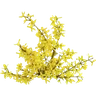
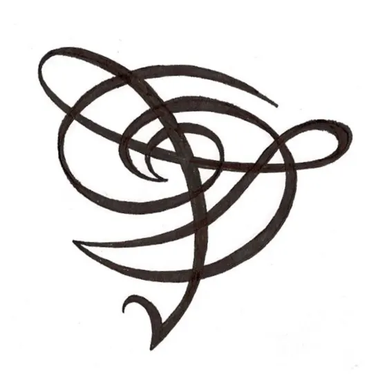
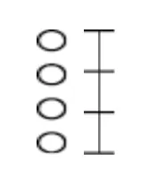
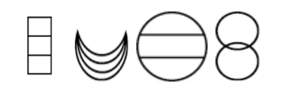
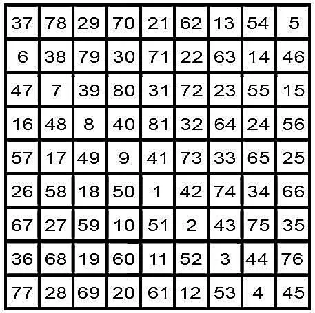
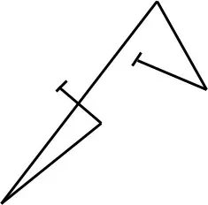
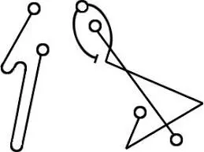
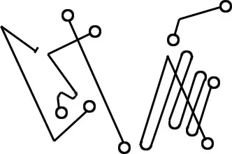

Astrology Grimoire
 Moon
Moon

GalbanumPlanetary Notes
Themes: Dreamwork, the inner self, psychic knowledge, dream working, childbirth, fertility, past life recall, imagination, subconscious mind
Color: Violet, silver
Stones: Moonstone, pearl, abalone, selenite
Herbs: Jasmine, almond, iris, lily, lotus, moonwort, mugwort, violet, white sandalwood
Greek Vowel Correspondences
- Alpha (A) = AH
- Omega (W) = OHW
The Planetary Seal of the Moon

Seal Symbolism
The Moon's seal features a crescent moon with clouds hovering above it, representing the veiled and mysterious nature of lunar energy. A spiral or wave pattern symbolizes the tides and the ebb and flow of emotions, as well as lunacy and mental fluctuations. The Moon is reflective rather than generative, it does not create its own light but mirrors the Sun, linking it to the realm of the mind, illusions, and the subconscious.
Gateway to Higher Planes
The Moon acts as a gateway to higher spiritual planes and deeper psychic awareness. It governs intuition, clairvoyance, scrying, and astral travel. Its energy influences dreams, femininity, sexual attraction, water, blood, and the management of time through cycles.
Applications of the Seal
The Moon's seal can be used in five primary ways:
Illumination: Enhance psychic abilities, open clairvoyant vision, and strengthen intuition. Use for scrying and astral projection.
Financial: Attract abundance through emotional alignment and time management. Work with lunar cycles to manifest prosperity.
Love: Draw romantic love, deepen sexual attraction, and enhance femininity. The Moon governs emotions and the tides of relationships.
Wrath: Use the Moon's darker aspect to work with lunacy, mental afflictions, and illusions. Employ for binding or confusion work when necessary.
Healing: Work with the Moon's connection to water and blood for emotional healing, menstrual health, and balancing mental states. The Moon soothes and restores.
Moon Phase Magickk
You are more likely to reap the rewards you desire if you do magickk during favorable phases of the moon. Each phase has its own unique energy that can add to the power of your spells.
New Moon: Encourages beginnings. The best time to start anything is during the new moon. As the moon grows in light, your undertaking will grow too. Work spells for new jobs, new romance, new homes, or any fresh start.
Waxing Moon: The two weeks after the new moon and leading up to the full moon supports growth and expansion. Cast your spell while the moon's light is increasing to generate growth in your worldly affairs. Work spells to boost income, heat up relationships, or gain promotions.
Full Moon: Marks a time of culmination when you can start seeing the results of whatever you began on the new moon. The full moon puts you in the spotlight and sheds light on murky issues. Work spells to bring projects to successful conclusions, receive rewards or recognition, attract attention, or uncover secrets and deception.
Waning Moon: The two weeks after the full moon and before the new moon encourages decrease. Cast your spell while the moon is diminishing in light to diminish the impact of something in your life. Work spells to lose weight, end bad relationships, or cut expenses.
Black Moon: When two new moons occur in the same month, the second is called the black moon. It is considerably more powerful than a regular new moon, so seeding spells may manifest more quickly.
Blue Moon: When two full moons occur in the same month, the second is dubbed a blue moon. You may find you get bigger or better results than on an ordinary full moon, or experience a lot more activity or vitality.
Moon Through the Zodiac Signs
As the Moon transits through the zodiac, it spends approximately 2.5 days in each sign, completing a full cycle every 27-28 days. Your natal Moon sign describes your emotional nature and inner self, while the transiting Moon creates windows of opportunity for different types of magickal work.
| Sign | Natal Moon Nature | Transiting Moon: Best For | Avoid During Transit |
|---|---|---|---|
| Passionate, impulsive, independent. Needs action and autonomy. Processes through physical activity. | Courage spells, new beginnings, independence work, fire magick, competition, quick decisive action. | Patience-requiring work, collaboration, long-term planning, emotional vulnerability. | |
| Security-seeking, sensual, loyal. Needs stability and comfort. Processes through the senses. | Abundance magick, grounding, kitchen witchery, financial planning, earth magick, beauty work. | Rushed decisions, restrictive practices, forcing change, ignoring physical needs. | |
| Curious, adaptable, communicative. Needs variety and mental stimulation. Processes through talking. | Communication spells, divination, learning, writing magick, air magick, social connection. | Deep emotional work, long commitments, singular focus, forcing one answer. | |
| Intuitive, nurturing, protective. Needs emotional security and home. Feels intensely. Moon's home sign. | Lunar magick, psychic work, home blessings, ancestral work, water magick, emotional healing. | Emotion-based decisions without reflection, overextending in caretaking, emotional distance work. | |
| Warm, generous, expressive. Needs appreciation and recognition. Dramatic emotional expression. | Confidence spells, success magick, creative work, solar magick, self-love, bold manifestation. | Self-criticism, humility work, hiding talents, stepping back, shame-based shadow work. | |
| Analytical, service-oriented, detail-focused. Needs order and usefulness. Processes by analyzing. | Healing magick, purification, organization, herbcraft, precision work, health spells, routines. | Perfectionism preventing completion, chaotic rituals, impulsive work, inconsistent practices. | |
| Harmonious, diplomatic, relationship-focused. Needs peace and beauty. Processes through discussion. | Love magick, justice work, beauty spells, partnerships, peace magick, art creation, contracts. | Unilateral decisions, aggressive magick, banishing, solitary work, harsh justice. | |
| Intense, transformative, private. Needs depth and truth. Psychic and emotionally powerful. | Shadow work, psychic development, transformation, sex magick, banishing, necromancy, secrets. | Superficial work, emotional lightness, avoiding intensity, manipulation magick. | |
| Optimistic, adventurous, freedom-seeking. Needs space and meaning. Processes through seeking. | Travel magick, expansion spells, higher learning, fire magick, optimism work, teaching. | Detailed precision, heavy emotional processing, restrictive decisions, pessimistic work. | |
| Disciplined, responsible, achievement-focused. Needs structure and respect. Emotionally reserved. | Career magick, long-term planning, discipline spells, business magick, earth magick, foundations. | Expecting emotional warmth, impulsive work, quick fixes, flexibility-requiring projects. | |
| Innovative, detached, humanitarian. Needs freedom and community. Processes objectively. | Group rituals, innovation, humanitarian magick, technology spells, air magick, future visioning. | Deep intimacy work, traditional approaches, emotional vulnerability, possessive magick. | |
| Empathic, mystical, boundless. Absorbs others' emotions. Deeply psychic and creative. | Psychic work, dream magick, spiritual connection, compassion spells, water magick, forgiveness. | Clear boundaries needed, important decisions, analytical work, harsh banishing. |
Connecting with the Moon
Moon worship appears in widely varied cultures including the Anasazi Indians of New Mexico, the Greeks, Romans, Chinese, pre-Columbian Peruvians, Burmese, Phoenicians, and Egyptians. Astrologers associate the moon with emotion, intuition, and creativity, the very things that witches rely on when doing magickk. Ways to strengthen your connection with lunar energy include going outside at night to let the silvery light wash over you, following the moon's passage from new to full and back again while noting how you feel during different phases, and tracking how your moods shift as the moon moves through different zodiac signs approximately every two and a half days.
Geomantic Characters of the Moon
The Moon governs two geomantic figures, each offering a distinct channel for lunar energy. These characters can be inscribed on talismans, carved into candles, or traced onto spell materials to invoke the Moon's influence over intuition, dreams, and the tides of emotion.
from Via

from Populus

Magickk Square of the Moon

Ceremonial Planetary Seals of the Moon
In the ceremonial tradition, these sigils are arranged within a double-ringed circle. The Seal is positioned at the top center, the Intelligence beneath it, and the planetary symbol to one side or below for visual balance. The Intelligence is regarded as benevolent in nature, while the Spirit is regarded as malevolent. For this reason, only the Seal and Intelligence are incorporated into ceremonial magickk circles.
Seal of the Moon
Azarel, Hod, Elim
Spirit of the Moon
Hasmodai

Spirit of Spirits of the Moon
Ichadeil, Malcah, Schedbarsemoth, Schartatham

Intelligence of the Intelligences of the Moon
Yashiel, Malcha betharsithimhed beruah schehakim

The Moon in Myth and Symbol
Because the Moon is lit at night by the Sun's light, it carries all the positive and negative traits associated with the female. Seen more widely, without the Sun's light none of the planets in our solar system would be illuminated and life on Earth would not exist as we know it, so the Earth shares a kind of sisterhood with the Moon, both relying on the Sun to be seen.
The Moon is visible chiefly at night, and night is bound up with death, so it made sense to our ancestors that the souls of the dead must dwell in the lunar atmosphere, an old belief that caused some unease at the time of the first Moon landings. Where the Sun's light stands for intuition and deductive reasoning, the Moon, as a mirror of the Sun, signifies knowledge gathered in a more inductive and painstaking way. The owl, a nocturnal bird that shares the Moon's symbolic space, is therefore the bird of knowledge. By its color the Moon is linked to the metal silver.
In human beings the female menstrual cycle echoes the cycle of the Moon. Traditionally women menstruated at the new Moon and ovulated at the full, though artificial light and manmade surroundings mean the two no longer always align. The word menstruation comes from the Greek mene, meaning Moon, a word that also gives us month, even though we measure months by a solar reckoning as well as a lunar one.
Kabbalistic Correspondence
- Ruling Angel: Gabriel
- Universal function: Strengthens hope, sends dreams
- Spatial bearing: Nadir
- Operation of the spirit: Imagination